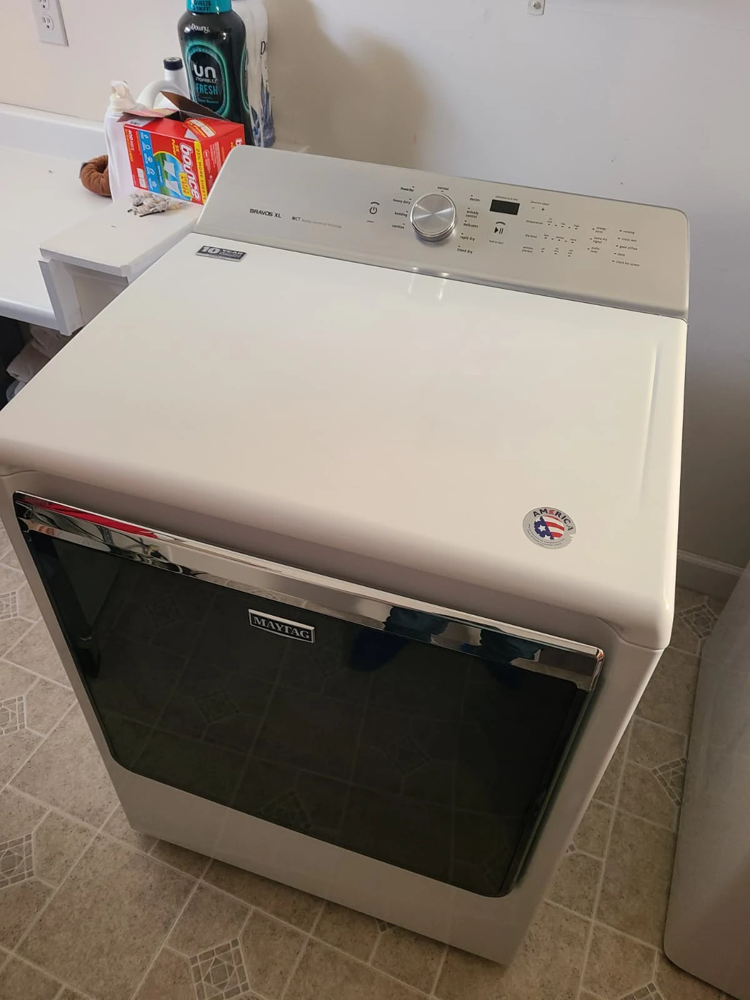
A Squeaking Maytag Bravos XL Dryer
A homeowner in Carmel, Indiana, called Alex Appliance Repair because their Maytag dryer was making a squeaking noise during operation. The complaint was mechanical noise, rather than a reported loss of heat. We visited the home to diagnose the dryer and inspect the components involved in supporting and turning the drum.
The service included opening the machine, removing accumulated lint and debris, replacing all five drum support rollers and replacing the separate belt idler pulley. After reassembly, the dryer was tested and operated quietly and properly.
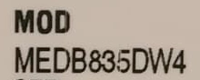
Model Confirmed: MEDB835DW4
The original appliance label identifies this Maytag Bravos XL dryer as MEDB835DW4. The model-number crop shown here comes directly from the service photograph and excludes the serial number.
The complete model helps identify the dryer configuration when arranging service. For a noise complaint, it is also useful to explain when the sound occurs and whether it changes as the drum turns. A model number and symptom description are enough to begin the conversation; homeowners do not need to identify a failed component themselves.
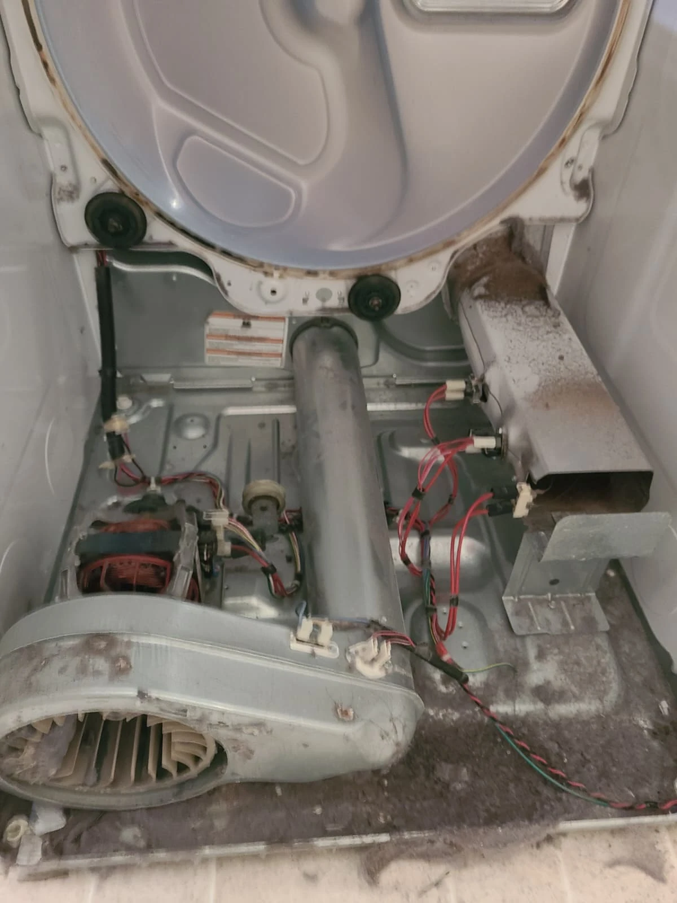
Diagnosis With the Dryer Open
The dryer was diagnosed and opened so the drum supports, belt tensioner and interior could be inspected. With the drum removed, lint and debris were visible across the cabinet and around the blower area. The front bulkhead was also removed, exposing its three support rollers.
This visit addressed the complete set of five drum support rollers: two at the rear and three at the front, along with the idler pulley. The idler is a separate belt-tensioning component and is not included in the count of five drum rollers.
Cleaning Lint From the Blower
The before-and-after photographs show accumulated lint in the blower wheel and the same area after cleaning. The dryer was cleaned while its interior was accessible during the repair.
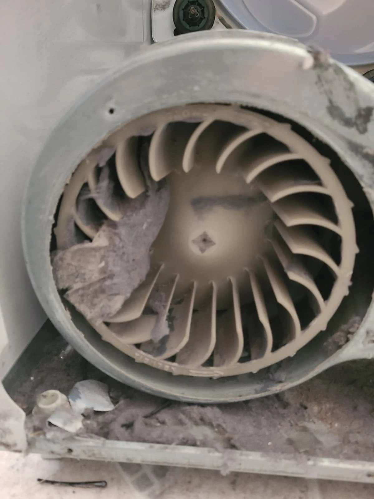
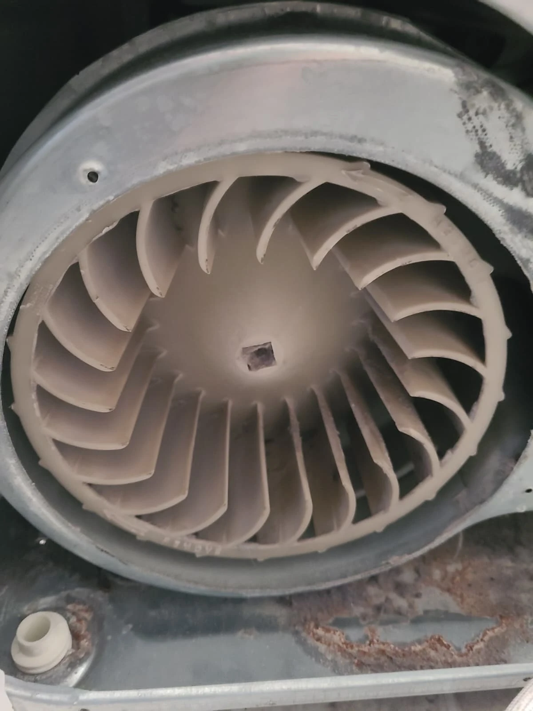
Internal cleaning was part of this service, alongside the mechanical replacements. Removing the visible lint did not replace the need to service the drum supports and idler pulley. Both the cleaning and the component work were completed before the machine was put back together.
Clearing the Internal Air Duct
Lint was also present in the removed internal air duct. These photographs show the duct before and after accumulated lint and debris were removed.
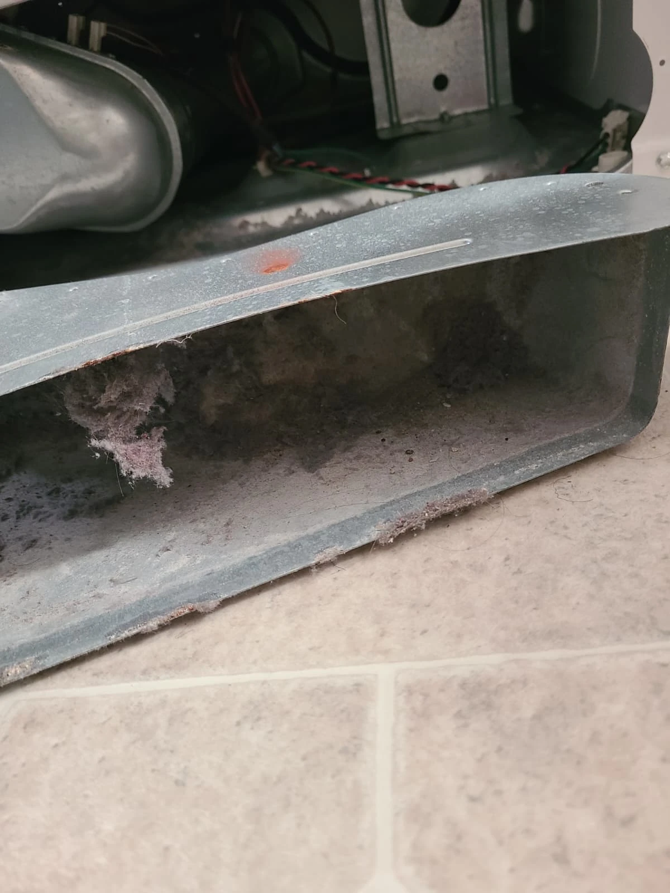
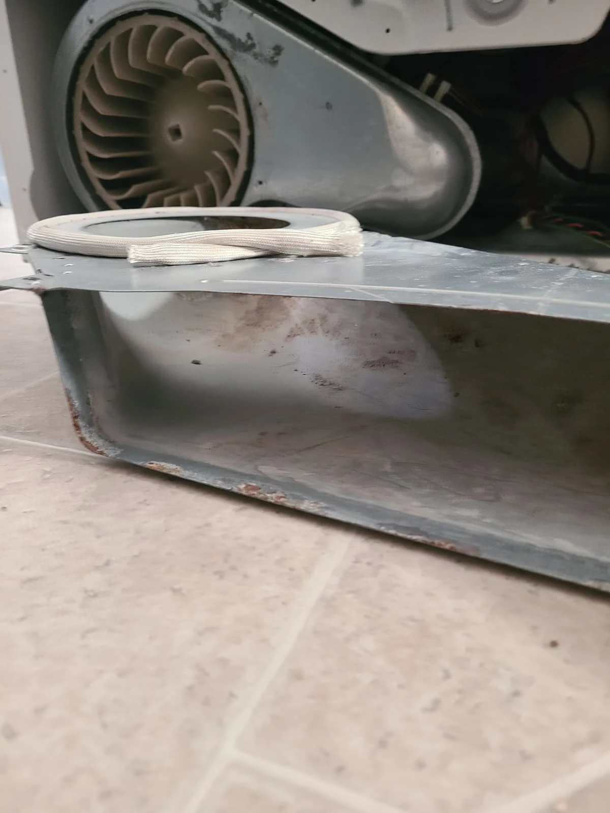
The cleaning shown here concerns components inside the dryer. It should not be confused with cleaning the home's entire exhaust vent, which is a separate service. Existing surface discoloration remains visible in the photographs; the documented work was lint removal, not replacement or refinishing of the duct.
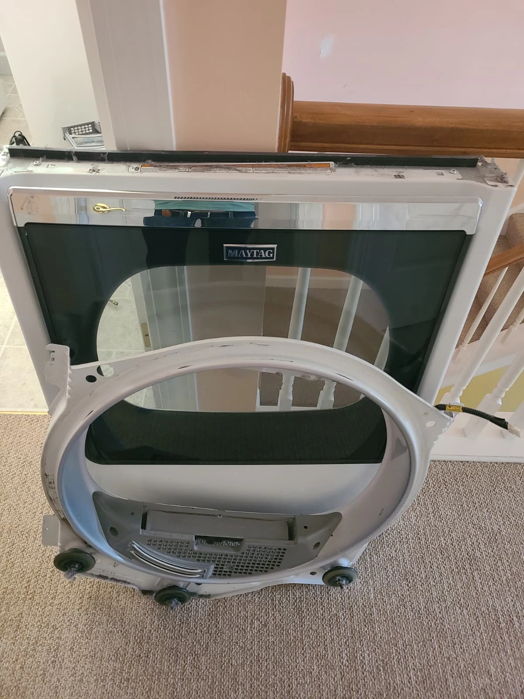
Replacing All Five Drum Support Rollers
The removed front bulkhead shows the three original front rollers. Together with the two rear rollers, they form the five drum supports replaced during this repair. Lint was visible around the original front roller hubs before the work was completed.
All five support rollers were replaced during the visit. The photographs below show the replacement rear rollers and a close-up of the replacement front rollers. These service images document the work on this dryer; another machine with a similar squeak still needs its own diagnosis.
New Rear and Front Rollers Installed
Two replacement rollers were installed at the rear, and all three front rollers were replaced on the front bulkhead. The front close-up shows two of the three front positions.
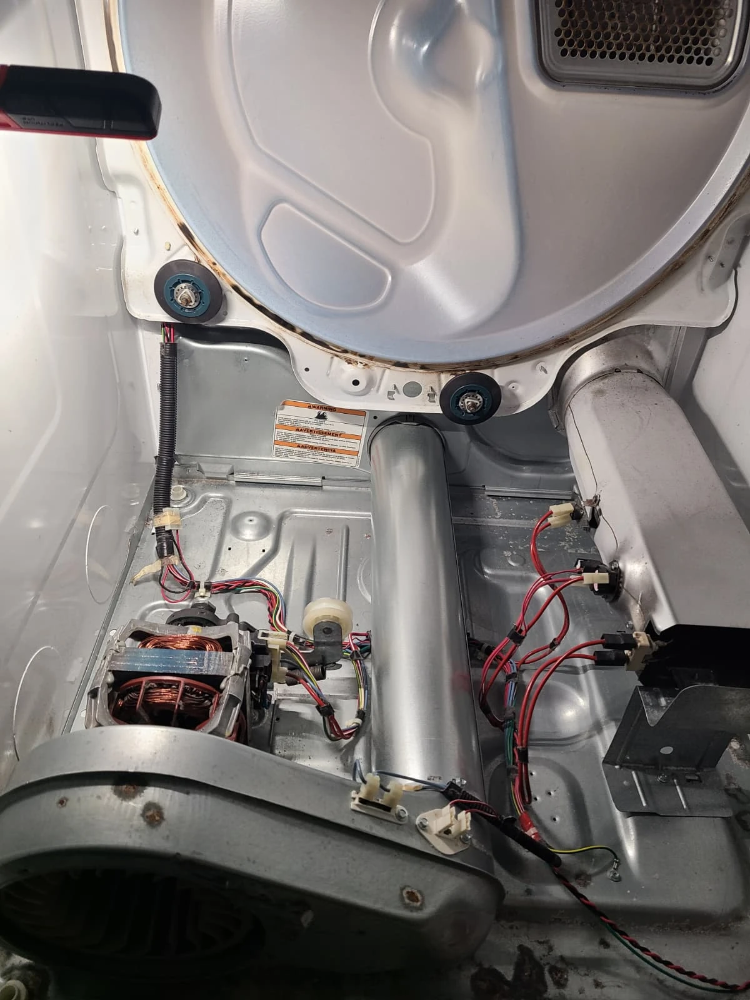
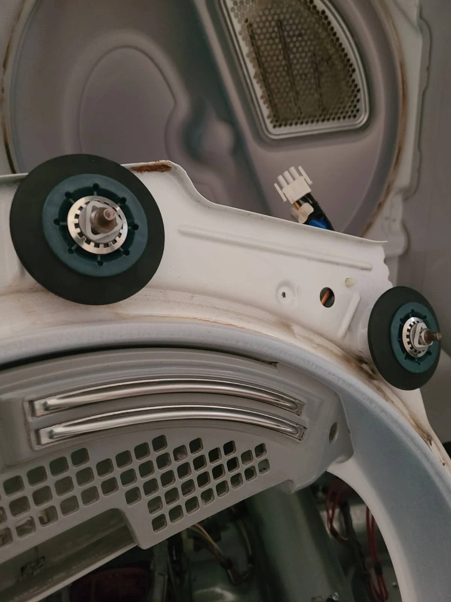
The drum support rollers carry the drum as it rotates. The technician completed the roller replacement while the dryer was disassembled, with access to both the front and rear supports. The total for this job was five drum rollers, plus the separate belt-tensioning idler shown in the next section.
Replacing the Belt Idler Pulley
The original idler pulley was replaced as well. The first photograph shows the old pulley; the second shows its replacement installed beside the drive motor.
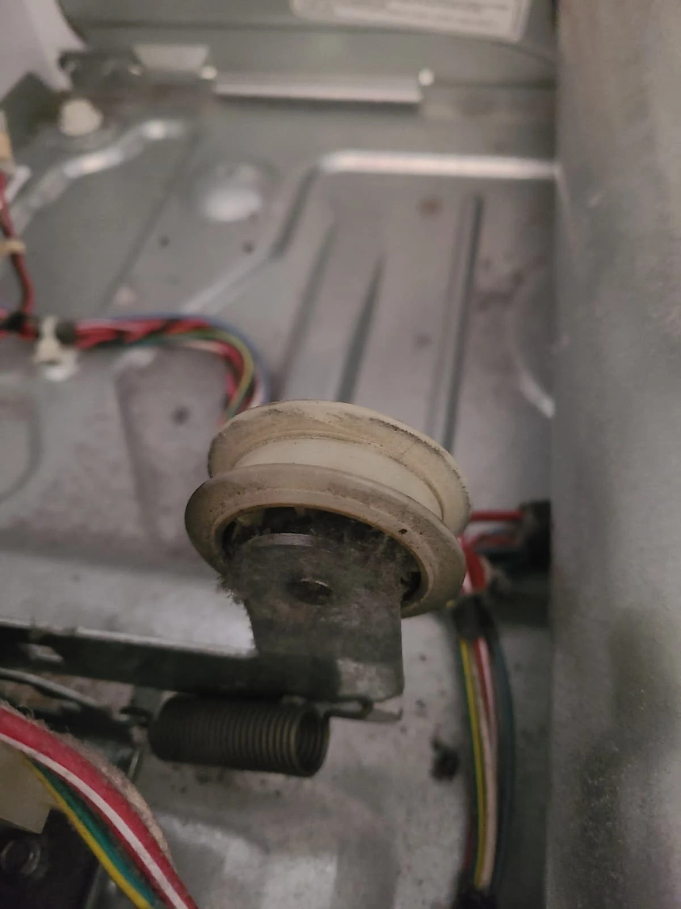
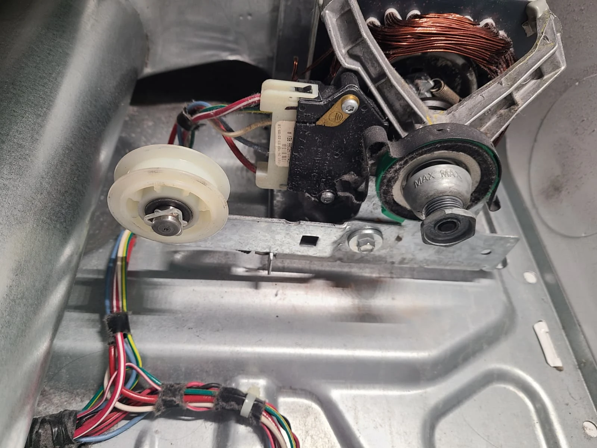
The idler maintains tension on the drive belt and has a different role from the drum support rollers. Replacing it completed the mechanical work described in this service. No belt replacement is included in the documented scope of this repair.
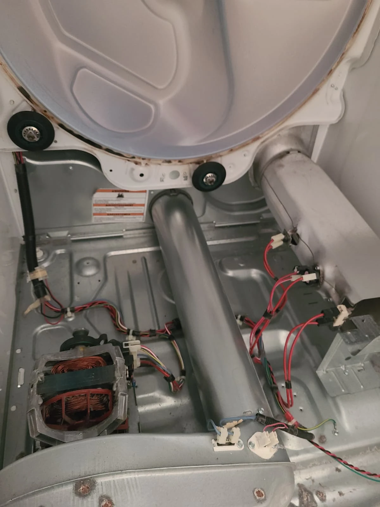
Reassembly and a Quiet Operating Test
After the interior cleaning and component replacements, the removed assemblies were reinstalled and the dryer was reassembled in reverse order. The photograph shows the cleaned interior before the machine was closed up, rather than a finished operating test.
The fully assembled dryer was then tested. It operated quietly and properly after the repair. The result of this visit was a resolved squeaking complaint following replacement of five drum support rollers and the idler pulley, with lint and debris cleaned from the interior.
Questions About This Maytag Dryer Repair
How many rollers were replaced?
Five drum support rollers were replaced: two rear rollers and three front rollers. One separate belt idler pulley was also replaced.
Was the dryer cleaned during the repair?
Yes. Internal lint and debris were removed, including buildup in the blower wheel and internal air duct shown in the photographs.
Was the squeaking gone after service?
Yes. After reassembly, the dryer was tested and operated quietly and properly.
Does every squeaking Maytag dryer need the same repair?
No. This article documents one MEDB835DW4 repair. A similar noise can require a different repair, so the appliance should be diagnosed before components are selected.
Maytag Dryer Repair in Carmel, Indiana
For a squeaking or noisy Maytag dryer, contact Alex Appliance Repair for dryer repair in Carmel. Share the model number and describe the sound so we can discuss the service visit.
See our dryer repair services, Carmel service coverage and recent repair stories. For a different Maytag service, read about a dryer that was not heating in Noblesville.
Alex Appliance Repair is an independent appliance repair service operated by Aksenov LLC. Call (463) 248-8429 to discuss your dryer.
Book dryer repair in Carmel